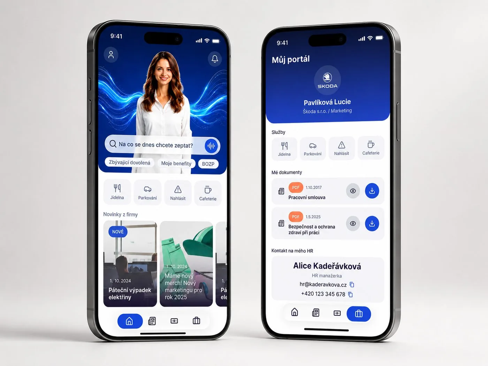

PalmApp
Head of Design · Apr 2026 — Now
Vedu redesign PalmAppu, B2B SaaS platformy pro moderní pracoviště s AI funkcemi, napříč mobilní appkou pro zaměstnance a HR administrací. Zároveň formuji vizuální identitu značky, tone of voice a produktovou strategii.